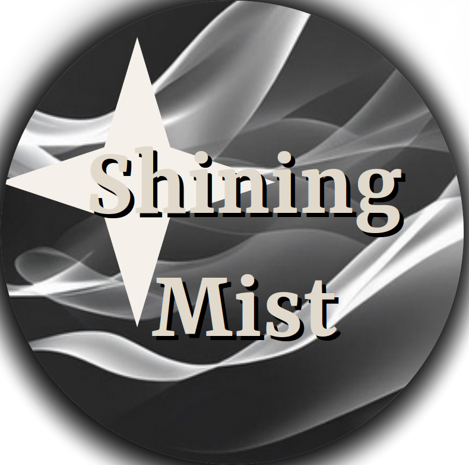

Shining Mist.
Alors qu'elle travaillait a bord du croiseur Speartech II, la première cyborg terienne Yoko doit faire face au crash d'une navette alien sur le pont du bâtiment. Son pilote a de mauvaises nouvelles a lui annoncer... Mais d'abord, ils doivent échapper à la zone sinistrée du croiseur et sortir vivants des périls qui les attendent.
~
With All Our Forces est un jeu de réflexion et d'aventure dans lequel deux joueurs aux talents complémentaires et aux fonctionnements opposés devront collaborer afin de traverser des salles encombrées d'acier et de moteurs endommagés, dans lesquelles chaque recoin peut cacher un danger. Échapperont-ils aux mystérieux ennemis du pilote alien ?
Les salles du croiseur avarié Speartech II vont vous demander bien des ressources et de l'analyse si vous voulez atteindre vivants la porte de sortie.
Aucune salle ne peut être résolue par un seul joueur. Tandis que la cyborg modifie le terrain et créé de nouveaux chemins, l'alien devra profiter des nouvelles options qu'il est le seul a voir. Sans communication, le succès sera impossible.
Au cours de votre périple, bien des danger seront a éviter. Les moteurs aux bords de l'explosion et les chutes de débris métalliques ne manquent pas dans un vaisseau en ruine. Et qui sait, peut-être que vos ennemis sont proches.
With All Our Forces est actuellement en développement. La date de sortie officielle est le 24 mai 2026.
[download] with-all-our-forces-develop-0.2.4
~
Ces ressources nous aident beaucoup pour la réalisation de notre projet et nous les remercions infiniement.
Retrouvez les sources du jeu sur le répertoire GitHub associé.